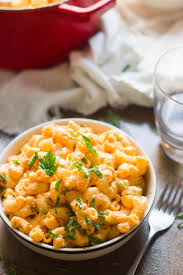
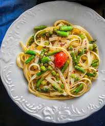
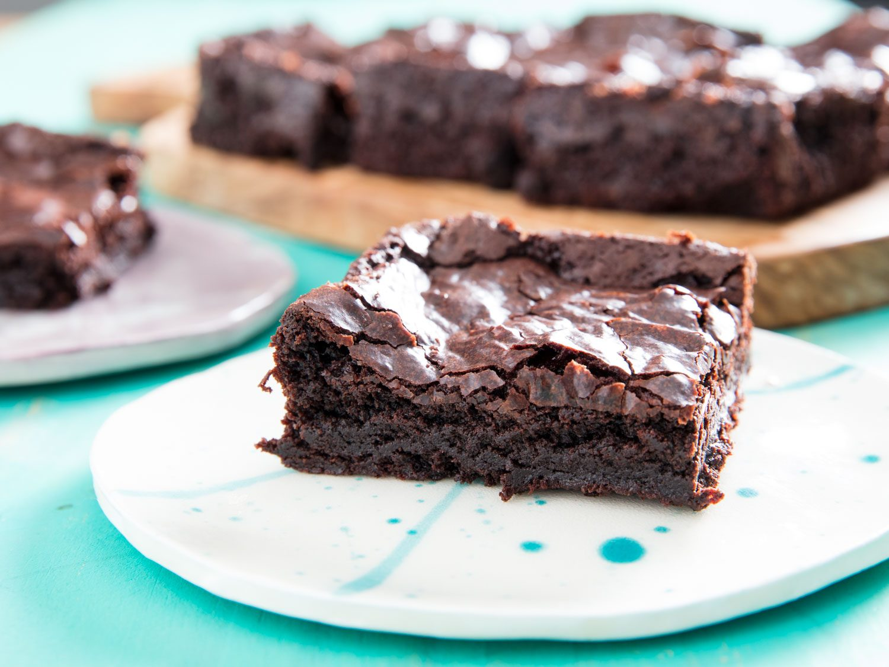
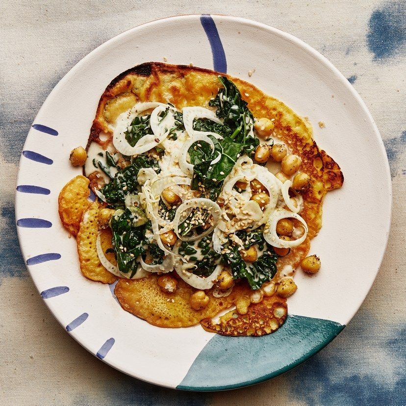
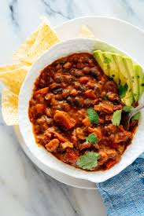

|

|
Vegan Mac and Cheese
Ingredients:
- 8 ounces whole-grain macaroni elbows
- 1 head of broccoli, florets cut into small bites (about 1 ½ to 2 cups), optional*
- 1 ½ tablespoons avocado oil or extra-virgin olive oil
- 1 small yellow onion, chopped (about 1 ½ cups)
- 1 cup peeled and grated russet potato (4 ounces, about 1 small or ½ medium potato), preferably organic
- 3 cloves garlic, pressed or minced
- ½ teaspoon garlic powder
- ½ teaspoon onion powder
- ½ teaspoon dry mustard powder
- ½ teaspoon fine sea salt, more to taste
- Small pinch of Frontier Co-op red pepper flakes
- ⅔ cup raw cashews**
- 1 cup water, more as necessary
- ¼ cup Frontier Co-op nutritional yeast
- 2 to 3 teaspoons apple cider vinegar or distilled white vinegar, to taste
To learn about the cooking instructionsClick Here
|
|

|
Asparagus and Lemon Spaghetti with Peas
Ingredients:
- 150g wholemeal spaghetti
- 160g asparagus, ends trimmed and cut into lengths
- 2 tbsp rapeseed oil
- 2 leeks (220g), cut into lengths, then thin strips
- 1 red chilli, deseeded and finely chopped
- 1 garlic clove, finely grated
- 160g frozen peas
- 1 lemon, zested and juiced, plus wedges to serve
To learn about the cooking instructions Click Here
|
|

|
Vegan Brownies
Ingredients:
- ground or milled flaxseeds 3 tbsp
- dark vegan chocolate 200g
- vegan butter 100g
- plain flour 150g, sifted
- cocoa powder 50g, sifted
- baking powder 1 tsp
- caster sugar 200g
- vanilla extract 1 tsp
- almond milk 150ml
To learn about the cooking instructionsClick Here
|
|

|
Chickpea Pancakes with Fennel and Kale
Ingredients:
- ½ cup chickpea flour
- 6 Tbsp. extra-virgin olive oil, divided
- Kosher salt
- 3 garlic cloves, divided
- 1 15-oz. can chickpeas, drained
- 1 Tbsp. za’atar (or curry powder, chile powder, or frankly any other combination of mild dried ground spices)
- 1 small bunch Tuscan kale, stemmed, leaves torn
- 1 small fennel bulb, very thinly sliced crosswise
- ¼ cup tahini
- 2 Tbsp. fresh lemon juice
To learn about the cooking instructionsClick Here
|
|

|
Vegan Chilli
Ingredients:
- 3 tbsp olive oil
- 2 sweet potatoes, peeled and cut into medium chunks
- 2 tsp smoked paprika
- 2 tsp ground cumin
- 1 onion, chopped
- 2 carrots, peeled and chopped
- 2 celery sticks, chopped
- 2 garlic cloves, crushed
- 1-2 tsp chilli powder (depending on how hot you like it)
- 1 tsp dried oregano
- 1 tbsp tomato purée
- 1 red pepper, cut into chunks
- 2 x 400g cans chopped tomatoes
- 400g can black beans, drained
- 400g can kidney beans, drained
- lime wedges, guacamole, coriander and rice to serve
To learn about the cooking instructionsClick Here
|